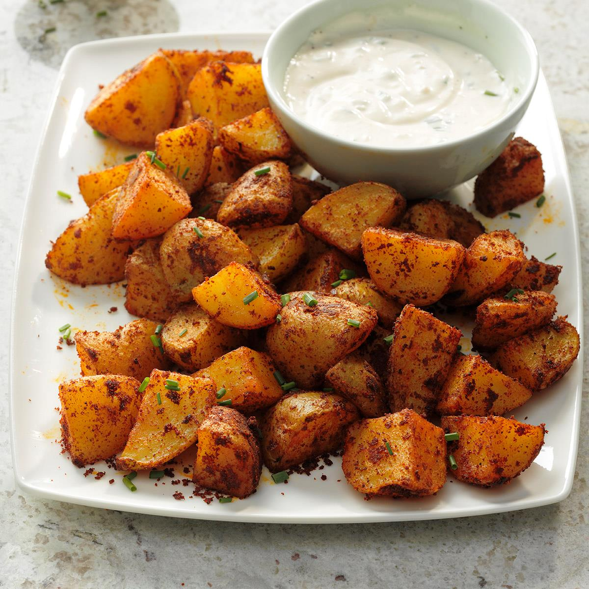

Spiced Potatoes

Spicy potatoes to add a kick to dinner.
get ready to experiment true flavor
Ingridients
- 6 red potatoes, cubed
- 1 teaspoon paprika
- 1 teaspoon cayenne pepper
- 1 teaspoon chili powder
- 1 teaspoon onion salt
- 1 teaspoon garlic powder
- 2 teaspoons dried parsley
- 2 tablespoons olive oil
Steps
- Preheat oven to 350 degrees F (175 degrees C).
- Bring a large pot of salted water to a boil. Add potatoes and cook until tender but still firm, about 15 minutes. Drain and spread on a baking sheet.
- In a small bowl, or cup, combine paprika, cayenne, chili powder, onion salt, garlic powder and parsley.
- Drizzle potatoes with oil and sprinkle with spice mixture.
- Bake in preheated oven for 40 minutes, or until crisp, turning every 10 minutes.